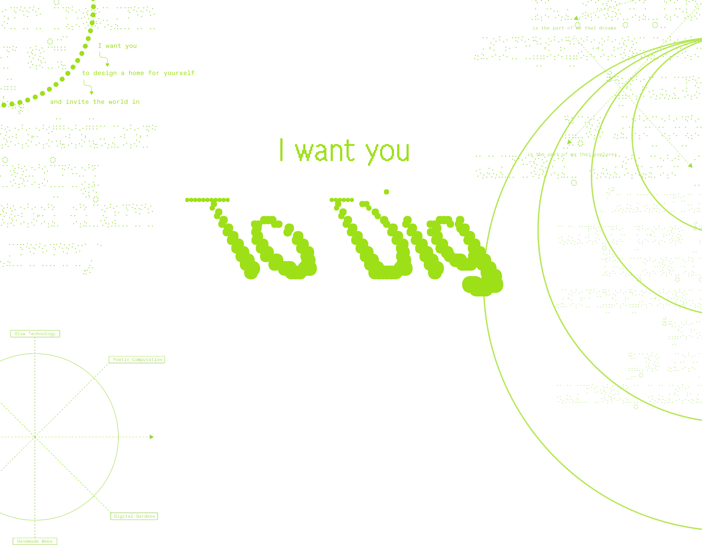
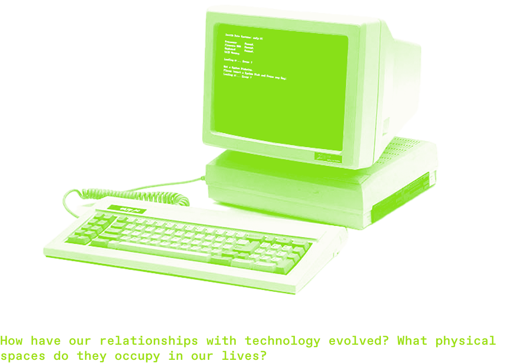
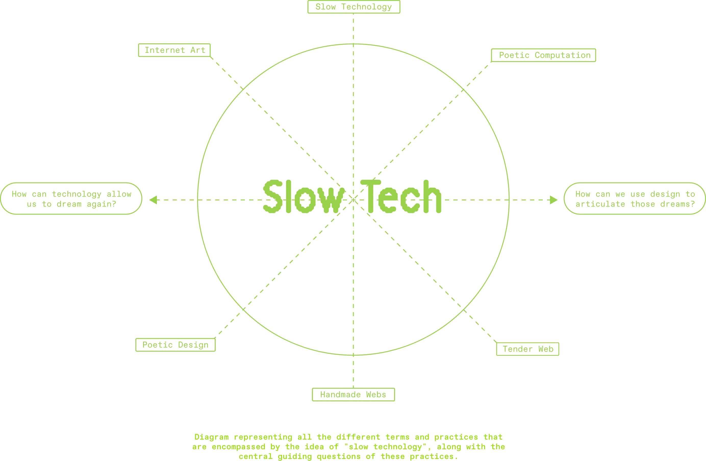
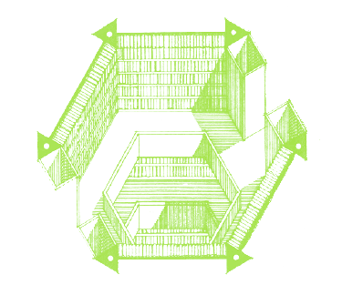
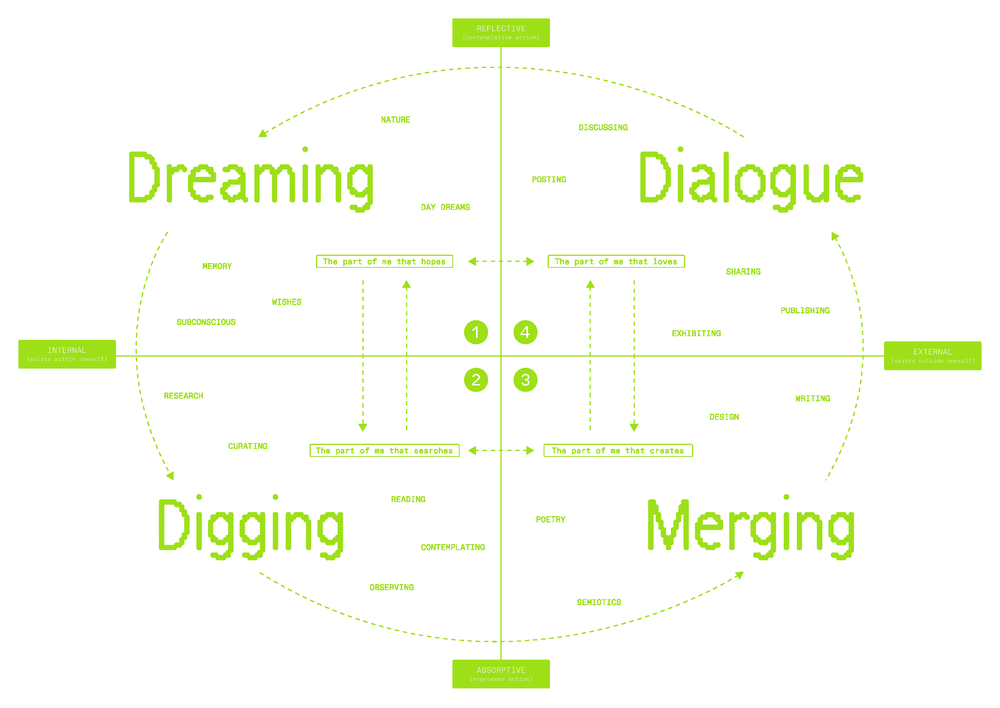

I WANT YOU TO DIG ◌ is a publication, website, and workshop that aims to frame creative cognition in the context of our technological consciousness. It analyzes how the evolution of our technological atmosphere has influenced our methods of research, creative outcomes, and capacity for connection. The title of this project works to reconnect technology with its material, elemental roots. To reconnect it with its tangibility is to reimagine its capacity as a tool, challenging the intentional obfuscation of its functions by the programmer class. Limiting the users understanding of their technology, through purposefully opaque platforms and systems that move too fast for our comprehension, serve the purpose of keeping the user subjugated and reliant on the knowledge of technocrats. By reframing our digital technology as tools, and connecting the act of researching on them to the physical act of digging, I ask the audience to engage in slow, inconvenient, and opportunity-rich research with the goal of producing creative work that is dense, personal, and invites community engagement.

This project adopts much of the vernacular and visual style of these artists, especially in reference to terms such as handmade webs, poetic computing (& poetic design), and slow technology. These terms have been used to define the styles and ideas formulated during this early creative-web period. Handmade webs, as discussed by artist and writer J.R. Carpenter in her essay A Handmade Web, are websites coded and maintained by individuals, rather than large platforms, commercial sites, or sites created through templates. Handmade webs are connected to handmade print, such as DIY zines, emphasizing the labor that goes into the design, creation, and maintenance of webpages and print projects. Poetic computation, and poetic design, emphasize the insertion of poetic elements into website and design, namely through challenging notions of clarity, efficiency, and functionality. Poeticism introduces layers of meaning that connect the audience to the maker by encouraging a variety of personal interpretations. Slow technology runs through both of these concepts. It encourages a slow, deliberate, and purposeful relationship with technology, one that champions reflection over convenience.

This website, proudly hand-built, aims to insert this project into the larger history of new media arts, functioning as a method of engaging in the practices outlined by these radical, early-internet pioneers. It hopes to engage with the infinite connective capacities of the internet. Drawing on the themes of the original Community Memory project, I hope we can revive the computer as a tool for connection. I draw a parallel between the self-made publication and the self-made webpage, just as you can pin a zine to your local community bulletin, you can disseminate your webpage through the bulletin of the internet. I intended the publication and workshop elements of this project to ground it in physical reality, recentering the computer as a tool for connection and research, an opportunity to enhance, but not shape, our creative practices.
Jorge Luis Borges' short story, the Library of Babel, introduces us to a universal library containing books composed of every possible combination of a 25-character alphabet. On these seemingly infinite shelves all knowledge is contained—every truth and every lie, all records of the past and future, the exact origins of the library itself—amongst a sea of gibberish. The Librarians within descend into religious fanaticism in their search to find meaning through the nonsense.

On Saturday, November 22nd, 2025 at 11:00 AM, I gathered 12 of my peers to engage in a community design workshop. This workshop was an exercise in poetic design experimentation, an interrogation of the internet as a design tool, and an exploration of community-based learning opportunities. It functioned as the culmination of my research by introducing and exploring these concepts within my immediate community.
